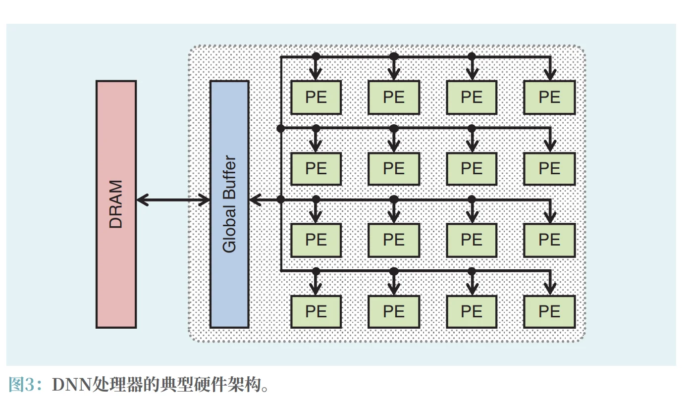
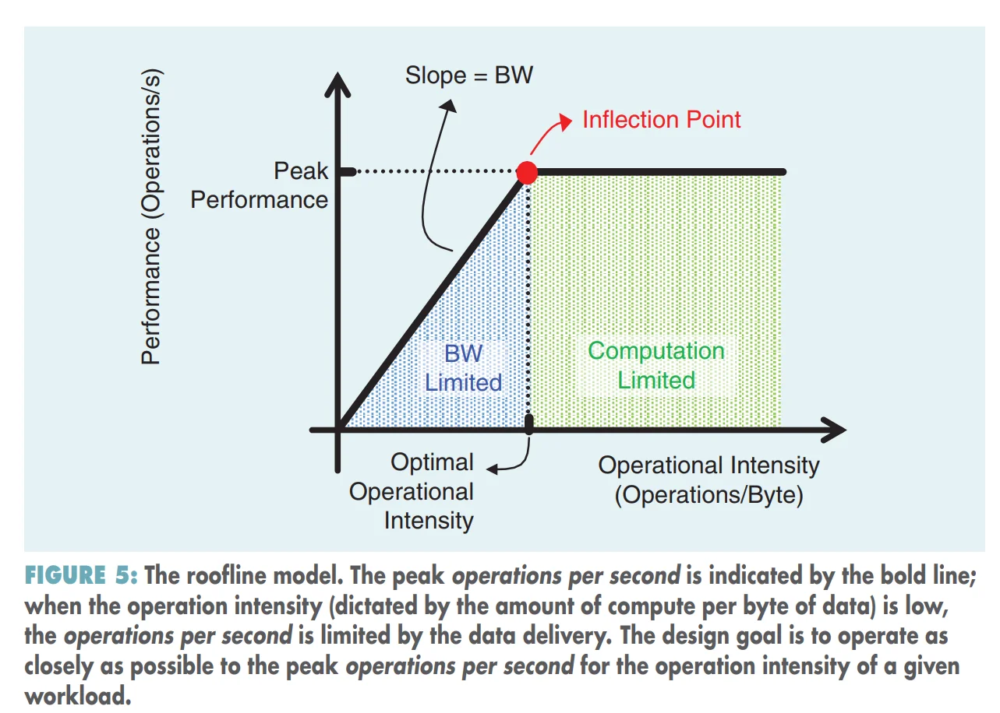
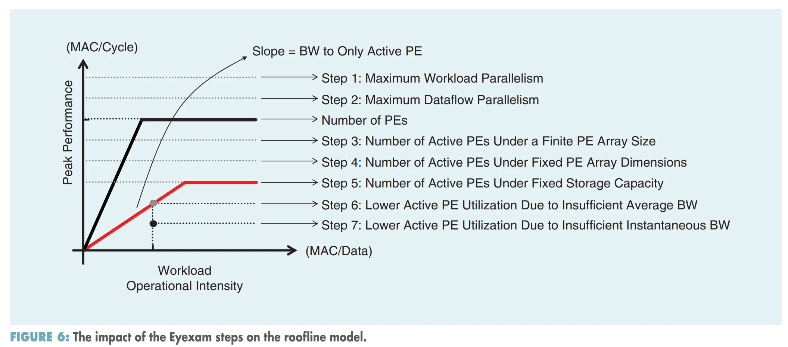

How to Evaluate Deep Neural Network Processors¶
I. Motivation and Background¶
深度神经网络处理的主要计算通常是乘累加（MAC）运算。
一个典型的 DNN Processor 硬件架构：

由处理单元（PE）组成，其中每个 PE 包含 MAC 单元以执行计算（以及可选的某些本地存储）和一个处理单元间通信网络（inter-PE network）。整个PE阵列还通过片上网络连接到一个大型全局缓冲区(global buffer)，而全局缓冲区又通过片外连接至DRAM。
虽然效率通常仅与每秒每瓦操作数相关联[例如，每秒每瓦浮点运算次数（FLOPS/W）或TOPS/W], ，但实际上它由更多指标组成，包括准确率、吞吐量、延迟、能耗、功耗、成本、灵活性和可扩展性。
实现能耗比例计算是一个众所周知的挑战
It is a well-known challenge to achieve energy-proportional computing
II. 准确率¶
准确率表示给定任务结果的质量。
要在困难的任务或数据集上实现高准确率，通常需要更复杂的DNN模型（例如，更多的MAC操作数和更多不同的权重、层形状的多样性增加等），这可能会影响 硬件处理DNN模型的效率。
MLPerf 是一套由行业联盟 MLCommons 主导的标准化 AI 基准测试套件，旨在公平地衡量和比较不同硬件、软件及云平台在机器学习任务上的性能。它常被类比为 AI 领域的“SPEC”（标准性能评估公司）基准。
III. 吞吐量和延迟¶
Throughput is used to indicate the amount of data that can be processed or the number of executions of a task that can be completed in a given time period.
吞吐量用于表示在给定时间段内可处理的数据量或可完成的任务执行次数
吞吐量通常笼统地表示为每秒操作数。在推理的情况下，吞吐量表示为每秒推理次数
延迟衡量的是输入数据到达系统与结果生成之间的时间。同时实现低延迟和高吞吐量有时会因方法不同而产生矛盾，这两个指标都应予以报告。
平均吞吐量¶
平均吞吐量和平均延迟通过平均在途（in flight）任务数相关联，定义如下：
吞吐量以每秒推理次数衡量，延迟以秒衡量，而在途推理数（作为在途任务的等价物）以同时处理的批处理中图像数量来衡量
inferences in flight (as the tasks-in-flight equivalent) measured in terms of the number of images in a batch being processed simultaneously
每秒推理次数¶
每秒钟推理次数 = 每秒执行的操作数 \(\times\) 每次推理所需的操作数的倒数。
- 每秒执行的操作数：\(\frac{\text { operations }}{\text { second }}\) 由 DNN 模型和硬件共同决定
- 每次推理所需的操作数：\(\frac{\text { operations }}{\text { inference }}\) 由 DNN 模型决定。
当考虑一个包含多个PE的系统时，其中 PE 对应于执行单个 MAC 操作的简单或原始核心，每秒操作数可以进一步分解如下：
第一项可以理解为：单个 PE 每秒钟执行的操作数，第二项可以理解为 PE 个数，反映了并行度，最后一项反映了由于架构无法有效利用 PE 而导致的性能下降。由于处理DNN的主要操作是 MAC 操作，我们互换使用术语“操作数”和“MAC操作数”
减少每个PE的面积也可以通过减少与向MAC传递操作数相关的逻辑来实现(reducing the logic associated with delivering operands to a MAC)。这可以通过用单块逻辑控制多个 MAC 运算来实现。这类似于基于指令的系统（如 CPU 和图形处理单元 GPU）中的情况，这些系统通过使用大型聚合指令（例如，单指令多数据 SIMD0、向量指令、单指令多线程 SIMT 或张量指令）来减少指令管理开销，其中一条指令可用于启动多个操作。
PE 利用率¶
PE 的利用率可以进一步分解为：
第一项反映了将工作负载分配给 PE 的能力，而第二项反映了这些活跃的 PE 处理工作的效率
在片上网络的约束下，活跃PE数量还取决于映射过程对PE的特定工作分配。
活跃PE的利用率在很大程度上取决于工作能否及时传递到PE，使得活跃PE在等待数据到达时不会空闲
Active PE: 按照我目前（2026-09-16-21:16）的理解，应该是某一次任务分配过程中，被分配到任务的 PE，也就是有活干的 PE。例如 \(3\times 4\) 的 PE 阵列，分配的任务尺寸是 \(3\times 3\)，那么总共 12 个 PE 中，只有 9 个是 Active PE。
utilization of active PEs: 理解为活跃 PE 的利用率，即活跃 PE 在等待数据到达时不会空闲。例如 9 个 Active PE，理论上每个 cycle 可以做 9 个 MAC，但由于数据传输不及时，实际每个 cycle 只能做 6 个 MAC，那么活跃 PE 的利用率就是 \(\frac{6}{9}=66.7\%\)。
Rootline model¶

整个 Rootline 可以写为一个公式：
其中：
- \(P_{\text{peak}}\)：硬件峰值计算性能
- \(BW\)：内存带宽
- \(OI\): 横轴，Operational Intensity，计算强度，这是这张图的核心指标。可以理解为：从存储器搬来的每 Byte 数据可以用来做多少运算？
\(OI\)越大，并不是说 MAC 越多，而是：每搬 1 Byte 数据，能榨出更多计算。
DNN Accelerator 强调的：data reuse, tiling, local buffer, weight stationary, output stationary, row stationary，这些东西，本质上都是在：想办法减少数据搬运次数，提高 \(OI\)，从而提高性能。
纵轴就是：Performance，单位 Operation/s。以简单理解为：芯片实际上每秒完成多少计算。
因此这张图实际有两个区域：
- 左边是 BW Limited 区域，\(BW \times OI < P_{\text{peak}}\)，芯片峰值算力再高也没用，因为数据根本喂不满 MAC。
- 右边是 Computation Limited 区域，\(BW \times OI > P{\text{peak}}\)，说明带宽和数据复用已经够了，MAC 可以满负荷工作了，真正限制芯片性能的是：MAC 数量、频率、cycles/MAC
中间的交界处：\(BW \times OI_{\text{critical}}=P_{\text{peak}}\)，即：
它表达的是：对于这台硬件而言，至少需要达到这么高的 OI，才能充分利用它的峰值算力。可以理解为：把计算阵列喂满所要求的最低计算强度。
Eyexam 分析方法¶

| STEP | CONSTRAINT | TYPE | NEW PERFORMANCE BOUND | REASON FOR PERFORMANCE LOSS |
|---|---|---|---|---|
| 1 | Layer size and shape | Workload | Maximum workload parallelism | Finite workload size |
| 2 | Dataflow loop nest | Architectural | Maximum dataflow parallelism | Restricted dataflows defined by loop nest |
| 3 | Number of PEs | Architectural | Maximum PE parallelism | Additional restriction to mappings due to shape fragmentation |
| 4 | Physical dimensions of PE array | Architectural | Number of active PEs | Additional restriction to mappings due to shape fragmentation for each dimension |
| 5 | Fixed storage capacity | Architectural | Number of active PEs | Additional restriction to mappings due to storage of intermediate data (depends on dataflow) |
| 6 | Fixed data BW | Microarchitectural | Maximum data BW to active PEs | Insufficient average BW to active PEs |
| 7 | Varying data access patterns | Microarchitectural | Actual measured performance | Insufficient instant BW to active PEs |
Eyexam 一开始假设拥有无限的 processing parallelism、storage capacity 和 data bandwidth，所以起点是一个“无限性能”的理想模型，然后逐步加限制。这样做是为了归因，找到每一步的性能损失的原因，类似：MACs/cycle:\(\infty\)→1000→600→256→192→160→120→105
Step 1. Layer size and shape——这一层本身到底有多少工作可以并行？
这一步假设所有能够空间并行的运算都可以同时执行，完全没有串行处理，因此性能上界由这一层有限的 MAC 数量决定。
Example
假设芯片无限强，但这一层只有 64 个 MAC，那这一 cycle 最多只能做 64 个 MAC，性能上界就是 64 MAC/cycle。因为总共就只有 64 个活要干。
例如某一个卷积层：\(H_{\text{out}}=W_{\text{out}}=2\), \(C_{\text{out}}=16\), \(C_{\text{in}}=1\), \(K_{H}=K_{W}=1\)，则总 MAC 数：\(H_{\text{out}}\times W_{\text{out}} \times C_{\text{out}} \times C_{\text{in}} \times K_{H} \times K_{W} = 64\)，在一个荒谬的“无限并行”机器上，可以让 64 个 MAC 同时工作，性能上界就是 64 MAC/cycle，因为只有 64 个 MAC 要干。
这就是：Maximum Workload Parallelism
Step 2. Dataflow —— 你的架构允许哪些循环并行？
Table:
Constraint：Dataflow loop nest
Type：Architectural
Bound：Maximum dataflow parallelism
原因：Restricted dataflows defined by loop nest
以卷积计算为例，卷积本质上有很多 Loop: c_{out}, c_{in}, h_{out}, w_{out}, k_{h}, k_{w}。Step 1 说的就是全展开，例如：
for c_out in range(C_out):
for c_in in range(C_in):
for h_out in range(H_out):
for w_out in range(W_out):
for k_h in range(K_h):
for k_w in range(K_w):
output[c_out, h_out, w_out] += input[c_in, h_out+k_h, w_out+k_w] * weight[c_out, c_in, k_h, k_w]
但是事实上，真实 accelerator 不会无限展开七重循环。比如一种 dataflow 支持 c_out 全展开并行，但是只支持 c_in, h_out 部分展开，无法做到全部 MAC 一同计算。
Example
假设 Layer 总共有：1024 MAC，Step 1 理论上 1 cycle 全做完。但是事实上dataflow规定：
- 64 个 output pixel 并行；
- 每个 output 的 16 个 reduction MAC 必须按时间累加。
因此最大只有 64 MAC/cycle。这并非 PE 数量不够，而是 dataflow 本身不支持同时执行那 1024 个 MAC。
这就是：Maximum dataflow parallelism
Step 3. Number of PEs —— 我只有这么多计算单元
这个很容易理解：\(N_{PE}\) 不够！
如果可并行工作数超过 PE 数，那么有限 PE 数自然会形成性能上限；此外，如果 workload 不能被 PE 数整除，也会有部分 PE idle
Example
例如，Step 2. 得到 600 个 MAC 可以并行。
但是 Accelerator 只有 256 个 PE，每个 PE 每个 cycle 只能做 1 个 MAC，那么 \(P\leq 256\text{ MAC/cycle}\)
而且还有 fragmentation: 假设 \(N_{PE}=16\) 要处理 30 个 MAC，那么：
- cycle 1: 16 个 PE 做 16 个 MAC
- cycle 2: 14 个 PE 做剩下的 14 个 MAC，剩下 2 个 PE idle。
因此 PE utilization = \(\frac{30}{32} = 93.75\%\)。
Step 4. Physical dimensions of PE array —— “有 12 个 PE”和“3×4 阵列”不是一回事
物理阵列形状和 data-delivery network 会进一步限制 mapping；不同数据类型，比如 activation 和 weight，可能沿不同阵列维度传递，因此某些 PE 即使“数量上存在”，也拿不到所需的数据。
Example
假设 \(12=3\times 4\)个 PE，想把某两个 loop 映射到两个物理维度，但是 workload 可并行尺寸是：\(2 \times 5\)，总工作量 \(10<12\)，但是实际并行过程中，第二维需要 5 个位置，但硬件每行只有 4 个 PE：一次无法铺满，实际一次只能映射 \(2\times 4\)，此时 12 个 PE 里只有 8 个 active PE
这就是：二维 Shape mismatch，Table 里称作 Number of active PEs 限制
Step 5. Storage capacity —— SRAM 不够，也会让 PE 开不满
如果没有足够存储保存中间结果，就会限制并行性，从而降低性能。
Table:
Constraint：Fixed storage capacity
Bound：Number of active PEs
原因：storage of intermediate data，且这个需求依赖于 dataflow。
Example
为了让 256 个 PE 都工作，需要片上保存：
- input activation tile：64 KB
- weight tile：64 KB
- partial sums：64 KB
总共：192 KB。但是如果片上 SRAM 只有 128 KB，那么就无法同时存储所有需要的数据，导致部分 PE idle，降低了性能。
怎么办？只能缩小 tile。例如只能同时处理原来一半的 output channels：256 → 128 active PE
所以这里有一个很重要的 accelerator trade-off：更多的 PE 和更多的 SRAM 并不是相互独立的
论文前面也专门提到过这个矛盾：增加片上存储可以减少 PE 等待数据，但在固定面积下又会减少 PE 数量。
到 Step 5 为止，主要是在削“水平屋顶”
Step 6. Fixed Data BW —— Figure 5 的 Roofline 正式回来了
这一步研究 memory hierarchy 各层之间有限的数据带宽；每一步计算需要搬多少数据，以及实际可用 BW，共同决定 PE 能否持续保持 busy。
Table:
Fixed data BW
Type：Microarchitectural
Bound：Maximum data BW to active PEs
Loss：Insufficient average BW to active PEs
这个其实就是 Rootline model，\(P=BW\times OI\)
这里的 \(BW\) 比之前更加细化，准确来说应该理解为：送给那些真正 active PE 的 BW。
Step 7. Varying data access patterns —— 平均带宽够，不代表每个 cycle 都够
这是 Eyexam 比普通 Roofline 更有现实意义的地方之一。普通 Roofline / Step 6 用的是：平均带宽。但是真实 workload 的 memory traffic 不是恒定的。论文明确说 Step 7 考虑的是 带宽随时间变化，即 instantaneous BW(瞬时带宽)：包括刚开始加载数据的 ramp-up，以及结束时 drain 数据的 ramp-down。
Table:
Varying data access patterns
Bound：Actual measured performance
Loss：Insufficient instant BW to active PEs。
Example
假设一个 kernel 运行 10 cycles。所需要的数据流量：
总数据需求：100，平均带宽需求：10/cycle。假设我能提供的数据带宽为 10/cycle，平均上是够的。但是实际情况是：cycle 1-3 需要 20/cycle，而我只能提供 10/cycle，那么就会出现 PE idle，导致性能下降。
!!! attention Attention: Double Buffering
论文特意提到双缓冲，比如有两个 buffer：Buffer A: PE 正在计算当前 tile，Buffer B: 同时预取下一个 tile，然后交换。
把：load → compute → load → compute，重叠成：
load + compute → load + compute → ...
代价是**多一块 Buffer，需要更多面积**。
整体流程用一个例子解释：
假设我们设计一个 CNN accelerator：\(256\text{ PE}\)
每个 PE：\(1\text{ MAC/cycle}\)
于是广告页可能会写：\(\boxed{256\text{ MAC/cycle peak}}\)
现在用 Eyexam 分析某一卷积层。
- Step 1. Workload: 模型架构的这一层最大可以同时展开：\(1024\text{ MAC}\)，所以 \(P_1=1024\)
- Step 2. Dataflow: Accelerator 的 dataflow 要求 reduction dimension 时间展开，只能暴露 \(512\)，所以 \(P_2=512\)
- Step 3. PE 数: 只有\(256\text{ PE}\)，所以：\(P_3=256\)
- Step 4. PE array shape: Accelerator 的 PE 阵列实际是\(16\times16\)，当前 layer mapping 与阵列维度不匹配，只能激活 \(192\)，于是\(P_4=192\)
- Step 5. SRAM: 完整映射需要 192 KB，但 Accelerator 只有 128 KB。只能减小 tile：\(P_5=160\)
- Step 6. 平均 BW: 当前 OI 与平均 memory BW 只支持：\(120\text{ MAC/cycle}\),于是 \(P_6=120\)
- Step 7. 瞬时 BW: 由于 load/drain、burst、不平衡等因素 \(P_7=105\)
- 最终：\(\boxed{P_{\text{actual}}\approx105\text{ MAC/cycle}}\)，虽然：\(P_{\text{advertised peak}}=256\)，实际 utilization 只有：\(\frac{105}{256}\approx41\%\)。这就非常直观地解释了：为什么“256 PE、256 MAC/cycle”不能直接等价于“跑任何 DNN 都有 256 MAC/cycle”。
!!! summary Summary: Rootline model VS Eyexam
Rootline model 的建模比较粗糙，回答的是：“性能没有达到 TOPS，是 compute 还是 memory 的锅”
而 Eyexam 分析方法的建模要精细很多，它回答的是：“如果是 compute utilization 不够，到底是 workload、dataflow、PE 数量、阵列形状还是 SRAM 的锅？如果是 bandwidth，又是平均带宽还是瞬时带宽的锅？”
到目前为止，我们已经讨论了硬件设计决策如何影响性能（即吞吐量和延迟）。现在我们考虑 DNN 模型的选择如何也会产生影响。具体而言，虽然 Step 1. 中每次推理操作数取决于 DNN 模型，但每秒操作数同时取决于 DNN 模型和硬件。因此，设计具有高效层形状的 DNN 模型（也称为高效网络架构，如MobileNet）可以减少 DNN 模型中的 MAC 运算数量，从而减少每次推理操作数。
Effectual and Ineffectual Operations¶
考虑到任何数乘以零都等于零这一事实，某些 MAC 运算是无效的（即它们不会改变累积值）。无效运算的数量是 DNN 模型中的权重和输入数据共同作用的结果。这些无效的MAC运算可能需要更少的周期，甚至不需要周期。相反，我们只需处理有效的（或非零的）MAC 运算，即两个输入均为非零的情况；这被称为利用稀疏性 (Sparsity)
有效操作：effectual operations
无效操作：ineffectual operations
理想情况下，硬件应跳过所有无效操作；然而在实践中，设计能够跳过所有无效操作的硬件可能具有挑战性。
无效操作类型：
- 被硬件利用的无效操作：即跳过的，exploited effectual operations
- 未被硬件利用的无效操作：即未跳过的，unexploited ineffectual operations
硬件实际执行的 operations = effectual operations + unexploited ineffectual operations
TABLE 3. THE CLASSIFICATION OF FACTORS THAT AFFECT INFERENCES PER SECOND.
| FACTOR | HARDWARE | DNN MODEL | INPUT DATA |
|---|---|---|---|
| Operations per inference (每次推理的操作数) | ✓ | ||
| Operations per cycle (每周期执行的操作数) | ✓ | ||
| Cycles per second (每秒执行的操作数) | ✓ | ||
| Number of PEs (PE 个数) | ✓ | ||
| Number of active PEs (Active PE 个数) | ✓ | ✓ | |
| Utilization of active PEs (Active PE 利用率) | ✓ | ✓ | |
| Effectual operations out of (total) operations (有效操作数/总操作数) | ✓ | ✓ | |
| Effectual operations plus unexploited ineffectual operations per cycle (每周期有效操作数+未利用的无效操作数) | ✓ |
hardware in the loop ?
IV. Energy Efficiency and Power Consumption¶
能效（Energy Efficiency） 指在给定单位能量下可处理的数据量或可完成的任务执行次数
能效通常笼统地表示为每焦耳的操作次数(the number of operations per joule)。
功耗（Power Consumption） 用于表示单位时间内消耗的能量
最大功耗由通常称为热设计功耗(thermal design power, TDP)的设计标准决定，即冷却系统设计用于耗散的功率
功耗通常以瓦特或焦耳每秒为单位报告。
功耗与能效共同通过以下方式限制吞吐量:
其中\(\frac{\text{inferences}}{\text{joules}}\)就是能效，Energy Efficiency，表示每焦尔的推理次数，可以分解为：
其中：
- 每焦耳操作次数 \(\text{operations}/\text{joules}\) 由硬件和 DNN 模型共同决定
- 每次推理操作数 \(\frac{1}{\text{operations}/\text{inferences}}\) 由 DNN 模型决定
每次操作的能耗（即每操作的焦耳数）可以分解为：移动输入和输出数据所需的能量+执行乘累加计算消耗的能量：
对于每个组件，每次操作的焦耳数（此处，一次操作可以是乘累加运算或数据移动）计算如下：
其中 \(C\) 是开关活动电容，\(\alpha\) 是开关活动因子，\(V_{DD}\) 是电源电压。
能耗（Energy consumption）主要由数据移动主导，因为数据移动的电容往往远高于算术操作的电容。
与“吞吐量和延迟”一节中讨论的吞吐量指标类似，每次推理的操作数取决于 DNN 模型；然而，每焦耳操作次数可能是硬件利用稀疏性以避免执行无效 MAC 操作的能力的函数
每焦耳的有效运算加上未利用的无效运算的数量，对于给定的硬件架构设计，这一数值大致保持恒定
V. Hardware Cost¶
影响成本的关键因素之一是芯片面积（例如，平方毫米）与工艺技术（例如，45纳米CMOS）的结合，这限制了片上存储量以及计算量（例如，DNN处理器的 PE 数量、CPU 和 GPU 的核心数量、FPGA 的 DSP 引擎数量等）
另一个重要因素是片外带宽的大小，它决定了封装和印刷电路板（PCB）设计的成本与复杂度 [例如，高带宽内存（HBM）[31] 用于连接片外DRAM，NVLink [38] 用于连接其他GPU，等等]
芯片面积成本和片外带宽之间也存在相互影响。例如，增加片上存储会增加芯片面积，但可以减少片外带宽。
仅降低成本并非唯一目标。设计目标始终是在给定成本下最大化吞吐量（Throughput）或能效（Energy Efficiency），具体而言，是最大化每成本每秒推理次数（例如，美元） 和/或每成本每焦耳推理次数
VI. Flexibility¶
The merit of a DNN processor is also a function of its flexibility, which refers to the range of DNN models that can be supported on the DNN processor and the ability of the software environment (e.g., the mapper) to maximally exploit the capabilities of the hardware for any desired DNN model.
DNN 处理器的优点还取决于其灵活性，即 DNN 处理器可支持的 DNN 模型范围，以及软件环境（例如映射器）针对任意所需 DNN 模型最大程度利用硬件能力的能力
我们可以将 "support" 分为两个层级。第一层级仅要求硬件能够在功能上支持不同的DNN模型（即DNN 模型可以在该硬件上运行）。第二层级要求硬件在不同的 DNN 模型上还能保持效率（即高吞吐量和高能效）
设计目标是在保持对广泛深度神经网络模型的高效支持的同时，降低支持灵活性所带来的开销（例如面积成本和能耗）
当我们将众多应用于DNN模型的技术纳入考量时，灵活性已变得愈发重要。这些技术包括：
- 具有不同网络架构的 DNN（即不同的层形状，这影响所需的存储和计算量以及可利用的数据复用）
- 不同级别的精度（即不同层和数据类型之间的位数不同）
- 以及不同程度的稀疏性（即数据中零值的数量）。
- 此外，除了MAC运算之外，还有不同类型的 DNN 层和计算（例如激活函数）需要得到支持。
硬件与DNN模型协同设计的方法！
迄今为止，利用 DNN 硬件的灵活性一直依赖于类似静态逐层编译器的映射过程。随着该领域转向动态变化的 DNN模型，映射过程将需要在运行时动态适应 DNN 模型或输入数据的变化，同时仍最大限度地利用硬件的灵活性来提高效率。
VII. Scalability¶
Scalability refers to how well a design can be scaled up to achieve higher performance (i.e., latency and throughput) and energy efficiency when increasing the amount of resources (e.g., the number of PEs and on-chip storage).
可扩展性指的是在增加资源量（例如，PE 数量和片上存储）时，设计能够扩展到何种程度以实现更高的性能（即延迟和吞吐量）和能效。
2026.09.17 理解：正如同参数规模之于模型架构？当参数量和数据量扩大时，Transformer 架构的表现会比 Resnet 等 CNN 架构提升得更大，这就是“可扩展性”更好？
处理单元数量¶
理想情况下，性能会随处理单元数量的增加而线性、成比例地扩展。当问题规模（例如批大小）保持不变时，这被称为强扩展，也是更具挑战性的扩展类型。另一方面，在允许问题规模增大的同时扩展性能（例如通过增大批大小），被称为弱扩展，在某些情况下也是一个重要目标。
片上存储¶
同样，能效也会随着片上存储的增加而提高，这可能是非线性的。
例如，增加片上存储使得整个DNN模型能够放在芯片上，将导致能效的突然提升
VIII. Interplay Among Different Metrics¶
显然，在设计 DNN 处理器时需要考虑许多重要的指标。与此同时，DNN 处理器的设计空间非常庞大。因此，能够在设计过程的早期快速探索设计空间，并准确估计所提出设计的各项指标，将会非常有帮助。
Timeloop 和 Accelergy 可以在详细 RTL description 尚不存在之前就进行这种估算。
准确的估计需要恰当考虑硬件的属性（如映射）以及工作负载的属性（如DNN模型形状、精度和稀疏性）如何影响各项指标（如吞吐量和能效）
IX. Summary¶
- 准确率决定了系统能否执行给定的任务。
- 延迟和吞吐量决定了它能否足够快地实时运行。
- 能耗和功耗主要决定了处理操作所在设备的外形尺寸。
- 成本主要由芯片面积和外部存储器带宽需求决定，它决定了人们需要为该解决方案支付多少费用。
- 灵活性决定了它所能支持的任务范围。
- 可扩展性决定了是否能够将相同的设计工作分摊到多个领域（例如云端和边缘）的部署中，以及系统能否随 DNN 模型规模高效扩展